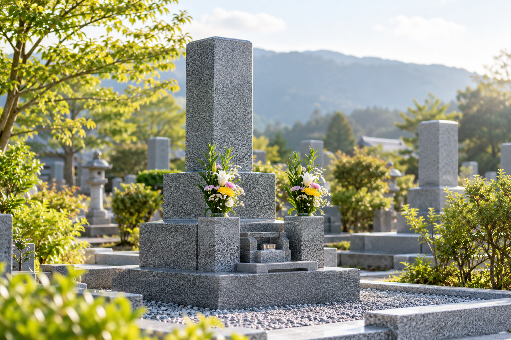

姫路周辺のお墓参り・清掃代行
遠くにいても、
お墓のお手入れを
相談できます。
お墓が対応地域にあれば、県外にお住まいの方もご相談いただけます。草むしりや墓石の水洗いなど、お墓参り・清掃の内容をご案内します。

ご家族で、ひとつずつ。
お墓の場所。お願いしたいお手入れ。作業後の連絡。
離れて暮らすご家族と、相談する前に確認できる案内です。
01 / お手入れどこまで含まれるか、
どこまで含まれるか、
先に確認。
基本料金に含むもの
- 01草むしり
- 02ゴミ拾い
- 03墓石の水洗い
- 04ローソク・線香
ご希望と地域に応じて
別途実費となるもの
- 献花・供物
- 地域・プランに応じた交通費
お見積もりは無料と案内されています。お墓の状況、ご希望、地域に応じた費用は事前にご確認ください。
02 / ご依頼の回数一度だけのご相談も、
一度だけのご相談も、
季節ごとのお手入れも。
1回のご依頼
必要な機会のお墓参り・清掃についてご相談いただけます。
年間4回プラン
春のお彼岸、お盆、秋のお彼岸、年末の4回が案内されています。
- 春春のお彼岸
- 夏お盆
- 秋秋のお彼岸
- 冬年末
毎月プラン
毎月のお手入れを希望する方向けのプランも案内されています。
03 / 対応地域お住まいが県外でも、
お住まいが県外でも、
お墓が対応地域なら
相談できます。
本人広告では、以下の地域を案内しています。
- 姫路市
- 高砂
- 龍野
- 相生
- 加古川
- 赤穂
- 加西
- 三木
- 小野
神戸市内全域についても
対応を案内しています。
交通費などの条件は地域・プランによって異なります。個別のお墓の場所をもとにご確認ください。
作業後の連絡方法も、
相談できます。
作業完了の報告は、LINE・ショートメール・電話などで対応すると案内されています。
作業完了報告書の作成を希望する場合は、その旨をお申し出いただけます。
作業
完了の連絡
実際の作業・報告書の画像ではありません。
05 / 相談前の確認メモまず家族で、
まず家族で、
相談したいことを整理。
ご本人に相談する前のメモの見本です。実際の受付項目・手順は、姫路お墓見守り隊様と確認して決める提案です。
提案機能の操作見本
ご希望の回数を選ぶと、相談文例が変わります。
相談文例
対応地域内のお墓について、1回のお墓参り・清掃を相談したいです。お墓の場所とおおよその広さ、希望する内容をお伝えします。
これは文例の切り替えだけを行う操作見本です。送信・保存はされません。
ご家族で確認しておきたいこと
相談を整理するための提案項目です。
- お墓のある地域
- おおよその広さ
- 献花・供物の希望
- 完了の連絡方法
日程は天候も含めて確認。
作業日程は個別にご確認ください。
本人広告では、雨天の場合は順延すると案内されています。